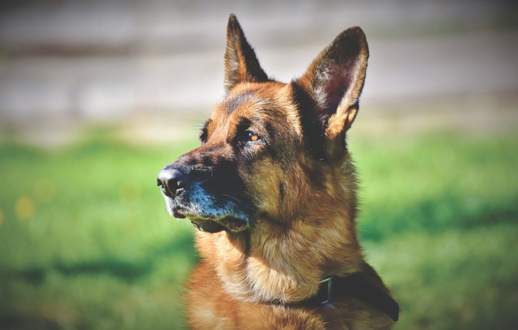

I'm Ryan and this is my website
I was born in Atlanta in 2007 but moved to North Carolina when I was a little more than a year old. At the moment I am a sophomore at Cox Mill High School. I have a sister, Kylie, who is in colllege right now, and a brother, Ian, who is in 7th grade. I play club and school soccer.
In my free time, I like watching sports, mostly the English Premier League and the NFL, playing XBOX, and watching movies.
"Wherever you go, there you are." -Jon Kabat-Zinn
| Favorite Videogame | Battlefront II | |
|---|---|---|
| Favorite Time of Day | Afternoon | |
| Favorite Drink | Water | |
| Favorite Animal | Dog |  |
| Favorite Writing Utensil | Pencil | |
| Favorite Color | Purple | |
Email: wallpaperjohnson@email.com
Phone: 111-111-1111